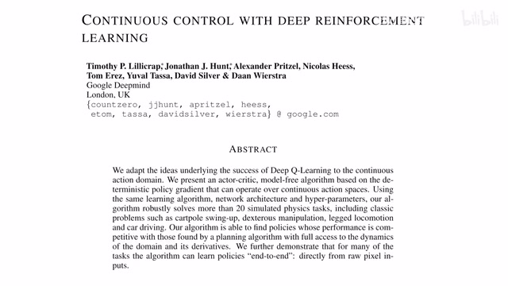
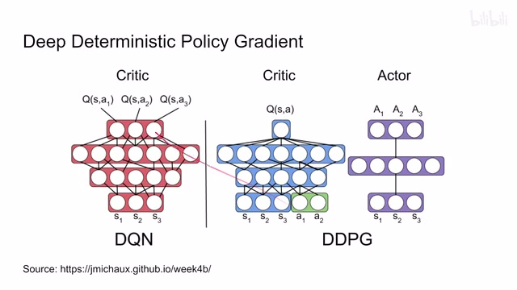
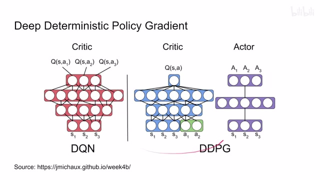
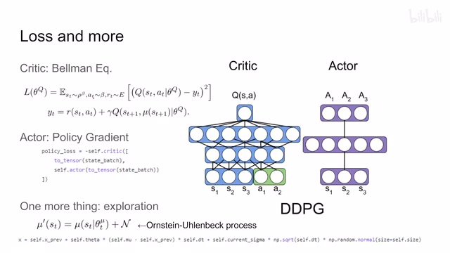
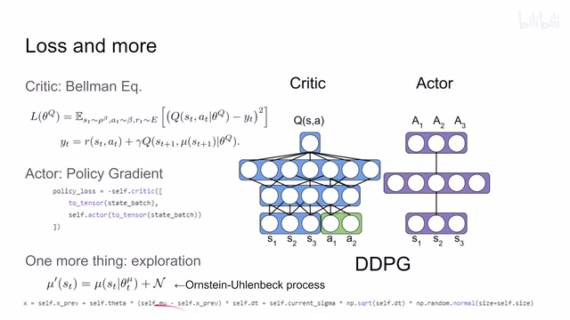
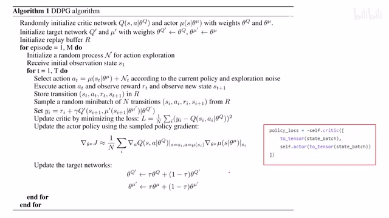
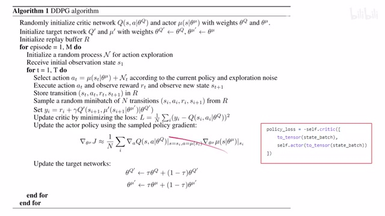
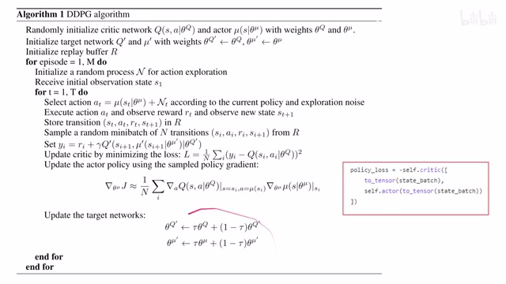
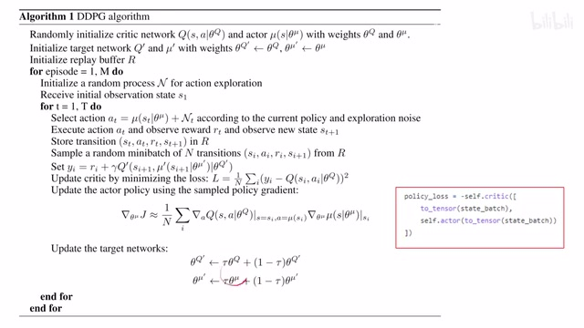

← 返回阅读库 · 原论文目录
论文讲解阅读文档 · 机器人学 · v128
DDPG&TD3[1509.02971][1802.09477]
视频时长 00:06:56；讲解文字 3,316 字符；提取讲解画面 23 张。按视频原顺序阅读，每段文字保留时间戳。
文字来自整段视频的自动语音转写，按自然停顿分段，并与 PPT / 论文页面 / 演示画面对齐。未将讲解压缩为摘要；术语、数字和口述公式请结合画面及原论文核对。 阅读稿已校正规范部分明确术语误识别；原始逐字稿和每处修改记录另行保留。
讲解画面为源视频截图（640×360），不是可编辑 PPT 文件。全片按每秒 2 帧扫描内容变化，逐步展开页保留；连续动画保留代表画面。清晰度受源视频限制。
下载完整资料包 · 含离线 HTML、PDF、Word、全部 PPT 画面和字幕。
原论文与材料
Continuous control with deep reinforcement learning · 下载完整 PDF（14 页）
Addressing Function Approximation Error in Actor-Critic Methods · 下载完整 PDF（15 页）
按时间阅读
00:00:00–00:00:11 · 画面 001

00:00:00–00:00:11 · 画面 001大家好，今天我们来填一个坑，Continuous Control with Deep Reinforcement Learning，也就是后来我们使用的 DDPGDeep Deterministic Policy Gradient。那么这个文章的动机其实非常简单，当时我们 DQN 刚提出来，用一个神经网络去描述一个巨大的状态空间，然后对于每一个离散的 action，我们给出它在当前 state 下面执行 action 所能产生的 Q value
00:00:11–00:00:16 · 画面 002
00:00:11–00:00:16 · 画面 00200:00:16–00:00:17 · 画面 003
00:00:16–00:00:17 · 画面 00300:00:17–00:00:35 · 画面 004
00:00:17–00:00:35 · 画面 004也就是对未来 discounted reward 总和的这么一个估计。这个呢是 DQN。那这里呢这个图的作者啊在这里他为了方便我们理解啊，你也要理解对吧，这个东西呢他可以被看成是一个 actor-critic 里面的这个 critic。那当然这个说法是不严谨的啊，只是为了跟这个 actor-critic 做对比，所以他说了这么一个东西。那我们今天要介绍这个 DDPG 呢对吧，它是一个 actor-critic 的方法，同时呢它是一个 off policy 的方法
00:00:35–00:00:37 · 画面 005
00:00:35–00:00:37 · 画面 00500:00:37–00:00:43 · 画面 006
00:00:37–00:00:43 · 画面 00600:00:43–00:00:48 · 画面 007
00:00:43–00:00:48 · 画面 00700:00:48–00:01:00 · 画面 008
00:00:48–00:01:00 · 画面 00800:01:00–00:01:01 · 画面 009
00:01:00–00:01:01 · 画面 009跟 DQN 呢就长得很像了。那区别是什么呢？这里我们看到 DDPG 呢是为了解决这个连续动作空间这样一个问题的。它呢就是从 DDPG 过来了。那相对于 DQN 它是执行在这个离散动作空间的。那对于 DQN 来说，你如果想做连续动作空间，你必须把这个连续动作空间离散化嘛。那现在呢 DDPG 不用了啊，大家直接吃新鲜的。我一看到它最大的不同呢相对于这个 DQN 就是我们的这个 QNetwork
00:01:01–00:01:10 · 画面 010
00:01:01–00:01:10 · 画面 01000:01:10–00:01:11 · 画面 011

00:01:10–00:01:11 · 画面 01100:01:11–00:01:35 · 画面 012
00:01:11–00:01:35 · 画面 012这里呢我们不仅把这个当前的 state 作为输入，同时呢 action 呢也作为输入，state action 我们可以把它理解成作为一个查表的 key 对吧，进到这个我们的这个神经网络里面去查，把这个 q value 给它查出来。那么这样呢就解决了我们这个网络啊找不到 q 值的这个问题。那现在找到 q 值了，我们该执行一个 policy 的执行一个 action 对吧，我们的这个 DQN 里面你其实很简单
00:01:35–00:01:36 · 画面 013

00:01:35–00:01:36 · 画面 01300:01:36–00:02:33 · 画面 014
00:01:36–00:02:33 · 画面 014选一个 q 值最高的 action 执行就好了。在 xquity 里面呢我们想做同样的事情啊，获得一个大的 q 值，本质上一个大的这个 expected reward。但是呢因为我们的动作空间呢它是连续的呀，你怎么能选一个连续的值出来呢？所以呢这里呢我们用了另一个网络啊，state 输进来，然后呢让他直接输出这个 action，你可以把它理解成是一个 regression 的问题。这样他输出的 action 呢就是一个连续的动作空间连续的量那么定义完了 actor 和 critic，那下面我们就要开始关心怎么样对这两个网络进行训练了。那其实主要呢，就是我们这个 loss 怎么定。那首先看这个 critic、critic 本身就是一个 Bellman equation 来更新的，对吧？当前这个网络跟这个 y 值的这个 MSEy 是啥呢？reward 加上 discounted 这个 next state 的 q value。但是这个 next state 的这个 q value 呢，它是要 condition 这个 action 的。
00:02:33–00:03:03 · 画面 015

00:02:33–00:03:03 · 画面 015对吧？所以这 action 呢就从我们这个 policy 在头这里呢，作者用的是这个 mu，从这里面输出一个最优的 action，然后查出这个下一个状态中最优的这个 q 值，然后呢做一个更新，这是一个标准的 Bellman equation。那对于这个 actor 呢，它本质上是一个 policy gradient，它的目的呢就是最大化我们能够得到 reward
00:03:03–00:03:04 · 画面 016
00:03:03–00:03:04 · 画面 01600:03:04–00:05:04 · 画面 017
00:03:04–00:05:04 · 画面 017那能够得到 reward 我们怎么估计呢？就是通过这个 critic 这个网络来估计的，这个当前这个 state 总得到最大的 reward。所以呢你看它写成 loss 呢其实是非常简单的对吧，把我们的这个 state 还有这个 action 扔进去，然后呢希望这个得到的 qvalue 尽可能的大就可以了。但是你说你如果稍微有点追求想了解这个 policy gradient就是它的 loss 虽然显示这个形式，但是如果我不用这些自动微分的软件，它的导数应该怎么求？那么关于这个部分，你可以去看我们的 Soft Actor-Critic，它前面的这一部分讲的是 on-policy 的 policy gradient，然后主要就是 reinforce 的方法。但是我们要把 on-policy 转到 off-policy，要利用大的 replay buffer，这个过程中我们使用了 importance sampling。
这个地方呢，我们还没有设计，所以现阶段呢，你只需要了解这个 policy gradient，从 on policy 到 off policy 中间呢，还有一个 importance sampling，而且到这里呢就可以了。那么关于这个 importance sampling 呢，后面呢我们根据需求看看是否还要再介绍一下。那这里呢，还有一些小的细节，包括首先第一个这个 exploration，我在一开始收集我们的样本的时候。
我们希望它尽可能多的探索更多的状态。这里在 DQN 里面用的是ε-greedy，就是大于一定概率之后就随机取个样本。但是这里是连续动作空间，你就不能像 DQN 里面那样做了。怎么办呢？一个最简单的方法，你就在动作空间里面均匀的采样。实在不行，这里作者还提供了一种设计这个 OU 过程，它是有一点随机，但是跟之前的状态还有点关系。
那你如果硬要踩着我胳膊问我啊，这玩意到底怎么实现的啊？这个有一个实现的这个方法，你呢如果感兴趣呢还是去读原代码。那么最后的最后呢，作者还说这个像 state，因为他当时处理的是 state vector 这种情况，所以呢这些 state 他们可能单位不一样，你最好要把它 rescale 一下，把它都 normalize 到一个尺度上。然后呢，作者还发现这个 batch normalization 可能会很有用，对吧？这都是一些小的细节了。最后一个回顾啊 DDPG 的方法。
00:05:04–00:05:24 · 画面 018

00:05:04–00:05:24 · 画面 01800:05:24–00:06:39 · 画面 019

00:05:24–00:06:39 · 画面 019那所以首先我们看到这个初始化的 critic networkactor network 对吧他们有他们自己的这个权重同时呢对于这个 critic network 和 actor network 他们都维护了一个 target network 给这个 critic network 做这个 target network 很常见啊但是给 actor network 做这个 target network 这个呢在后面就不是那么常见的设计了更新一下这个权重那么还有这个 replay buffer 好的污染红灯熄灭 episode 开始啊
首先我们通过一个 random process 来收集一个 state transition。完事我们就可以用 OU 过程去基于我们当前的 policy，然后在 policy 基础上加一个随机的变量来进行探索，探索得到 state action transition 得到这么一个对，就把它存在 replay buffer 里面。更新的时候取一个 batch 过来，Bellman equation 把 target network 更新好。
这里注意，既然我们是更新 targetQ ，是要从 target network 里面出，自由的 action 也是要从 target action network 里面出，是一个小的细节。反正有了 target 就可以更新 critic MSE，然后就更新 actor policy 了，还是我们之前说的这个规定，看起来很复杂但是
00:06:39–00:06:42 · 画面 020

00:06:39–00:06:42 · 画面 02000:06:42–00:06:49 · 画面 021
00:06:42–00:06:49 · 画面 021但是呢，PyTorch 这种自动微分的工具呢，就帮你解决这种问题了。那么更新完了 critic，更新完了 actor 啊，最后记得更新一下这个 target network，相应的各自更新完事呢就可以了。那么这个呢，就是最基础的这个 DDPG。
00:06:49–00:06:50 · 画面 022

00:06:49–00:06:50 · 画面 02200:06:50–00:06:56 · 画面 023

00:06:50–00:06:56 · 画面 023转写与来源说明 · 0 个自动复核提示
保留 16 个原始语音片段，0 个片段触发自动复核提示。提示仅用于定位可能的术语、重复或识别问题，不等于已确认错误。
讲解画面为源视频截图（640×360），不是可编辑 PPT 文件。全片按每秒 2 帧扫描内容变化，逐步展开页保留；连续动画保留代表画面。清晰度受源视频限制。
原视频：paper/合集_2026-10-16_机器人学/[论文速览]DDPG&TD3[1509.02971][1802.09477].mp4
SHA-256：2dc4fe358db9b3261980e5725b9deb62bc0550ab506b6f8212c13616e92c6360
全文按视频语音与画面制作。原论文可从上方链接下载；完整资料包保留全文、原始逐字稿、字幕和校对记录。